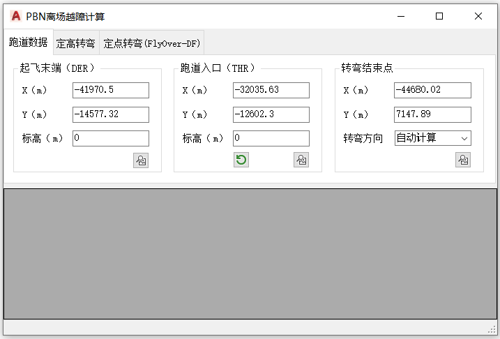

功能简介
【PBN 离场】用于 PBN 离场程序的越障计算与保护区绘制。提供“定高转弯”和“定点转弯（FlyOver-DF）”两种模式，可对转弯区与直线段分别评估障碍物。
界面预览

界面元素
| 选项卡 / 控件 | 说明 |
|---|---|
| 跑道数据（选项卡） | 起飞末端（DER）、跑道入口（THR）。 |
| 定高转弯（选项卡） | 在指定高度开始转弯；含【DER之前转弯】。 |
| 定点转弯(FlyOver-DF)（选项卡） | 飞越定位点后转弯。 |
| 转弯区评估 / 直线段评估（按钮） | 分别对转弯区、直线段进行越障评估。 |
| 一键评估 / CAD | 整体评估、绘制保护区。 |
操作步骤
- 命令行输入
Y55_PBN_Departure打开窗口。 - 在“跑道数据”中填入 DER / THR。
- 选择“定高转弯”或“定点转弯(FlyOver-DF)”，设置转弯参数。
- 【一键评估】评估障碍物 /【CAD】绘制保护区 /【标记】标记重要障碍物。
联动：在障碍物列表中单击某行，图纸会自动高亮并居中到该障碍物。